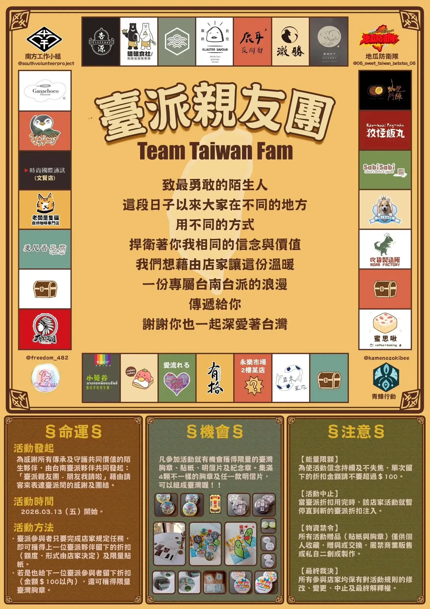
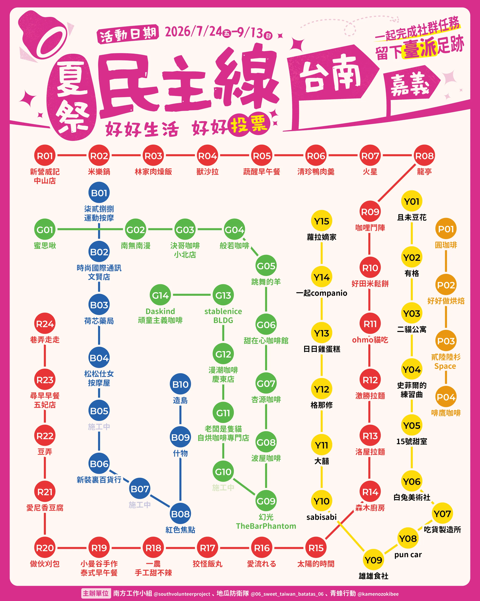

2025.04店家與街頭
讓想參與的人，找到可以出發的地方。
我們介紹協助連署的友善店家，把地點、營業時間與注意事項整理進地圖。巷弄裡的咖啡店，也能成為安靜寫下一份連署的地方。同一個月，我們從台南前往沙鹿，和當地志工一起舉牌、掃街、支援連署站。
04.15 店家紀錄 ↗04.28 沙鹿支援 ↗我們是南方工作小組，是參與罷免行動的空陸戰志工，也是探索台南台派店家的飯友團。我們在台南收件，也跨區支援；整理友善店家，也關心一起努力的夥伴。把街頭累積的連結，帶進日常生活，是我們一路持續在做的事。
Team Taiwan Fam · 朋友我請啦
致最勇敢的陌生人。我們與台南夥伴透過店家串聯，把一份請客的心意留給下一個人，傳遞彼此的感謝與支持。
各店提供的折扣金額、形式與指定任務由店家決定。折扣用完時暫停，直到新的折扣注入；參與前請向店家確認。
完成參與店家規定的任務，即可獲得上一位夥伴留下的折扣，以及限量貼紙。
也可以為下一位參與者留下 100 元以內的折扣，並獲得限量臺灣胸章，讓互助繼續傳下去。
參與活動有機會獲得限量胸章、貼紙、明信片及紀念章。海報說明：集滿四顆不同胸章及任一款明信片，可以組成臺灣。
海報列名夥伴：南方工作小組、地瓜防衛隊、FreeDom（@freedom_482）、青蜂行動，以及參與店家。

好好生活，好好投票。
跟著集章路線走進台南、嘉義的友善店家，把一頓飯、一杯飲料與一次相遇，連成日常裡的民主風景。
原訂 9 月 13 日截止，8 月 31 日公告延長至 12 月 6 日，讓大家有更多時間慢慢逛、慢慢集章。
在參與店家領取集章單。台南路線分為四類，可摺成隨身小本；掃描海報或手冊上的 QR Code，就能查看總地圖。
依活動公告與店家指引集章。完成任一條路線後，拍下集章單，私訊南方工作小組，聯繫領取紀念小禮物。
到串聯店家的 Instagram 精選動態，找到「夏祭民主線」，點選「輪到你了」，用店家限定打卡框分享照片。
感謝島國協力製作活動地圖，也謝謝店家與夥伴提供禮物。各路線首位完成者另有禮品，集滿四條路線可獲台灣御守；完整品項與領取方式請查看延長公告及最新貼文。
共同主辦：南方工作小組、地瓜防衛隊、青蜂行動。

沿著留下的行動紀錄，
回望我們如何走到今天。
我們介紹協助連署的友善店家，把地點、營業時間與注意事項整理進地圖。巷弄裡的咖啡店，也能成為安靜寫下一份連署的地方。同一個月，我們從台南前往沙鹿，和當地志工一起舉牌、掃街、支援連署站。
04.15 店家紀錄 ↗04.28 沙鹿支援 ↗台南火車站前，我們持續收件，協助其他選區補件。夥伴們自費跨區支援；無法到場，就在網路上協助傳遞訊息。「哪裡Tainan哪裡幫」，是我們在一次次行動中實踐的宗旨。
05.09 台南收件 ↗05.30 支援紀錄 ↗跨區奔波會累，街頭的壓力也需要被接住。我們徵集按摩、心理諮商等支持資源，也分享聚會與能暫時歇腳的店家。7 月 26 日，我們邀請夥伴聊聊未來還能努力的方向，提醒大家關心身邊的人，做彼此的後盾。
05.13 支持資源 ↗07.26 彼此的後盾 ↗我們與店家、志工合作，提供公投連署駐點與快閃資訊，招募能帶著電腦和讀卡機來幫忙的夥伴。為了讓大家更容易找到當天可連署的地方，我們調整資訊方式，每日更新台南據點地圖，以標記和備註說明時間。
11.30 快閃連署點 ↗12.13 地圖更新 ↗01.10 志工駐點 ↗臺派親友團從 3 月 13 日開始，透過台南店家串聯，邀請參與者完成店家任務，使用上一位夥伴留下的折扣；也能留下一份 100 元以內的折扣給下一個人。讓陌生夥伴之間的感謝與支持，在日常消費裡繼續傳遞。
活動介紹與原始海報 ↑「夏祭民主線」透過店家集章、小禮物與線上打卡，邀請大家走進友善店家。到不了現場，也能分享店家限定的限動打卡框。從一頓飯、一段散步開始，把好好生活與好好投票放在一起。
08.06 全線通車公告 ↗考量醫護沒有時間排隊，我們請藥局協助發送洋流飄帶；收到友軍贊助的物資，再分送到店家。我們也提醒大家留意盜圖和詐騙，照顧創作者與參與者。一路建立的連結，繼續在生活裡派上用場。
11.09 醫護領取安排 ↗11.10 物資分送 ↗11.13 防詐提醒 ↗「現在好好生活，年底好好投票。
年底好好投票，未來好好生活。」
把地點、時間與參與方式說清楚。透過地圖和貼文，讓每一份想幫忙的心意，都找得到下一步。
讓志工、店家與在地夥伴相遇。從街頭支援到物資分送，讓不同的人，用各自能做到的方式參與。
在疲憊時分享支持資源，在日常裡維持聯繫。一起努力，也記得關心身旁的人。
關注南方工作小組的最新消息，看看最近的活動、店家與志工資訊。從你做得到的一件小事開始。